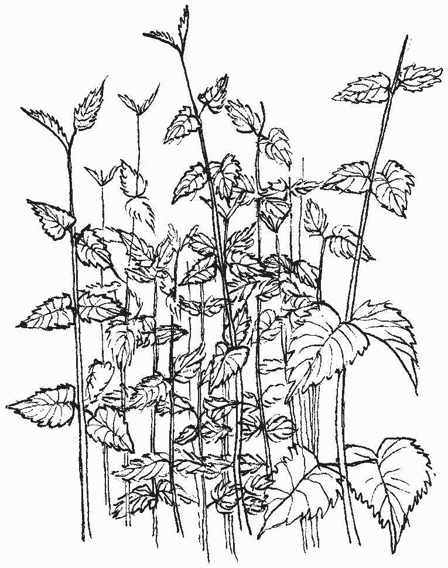
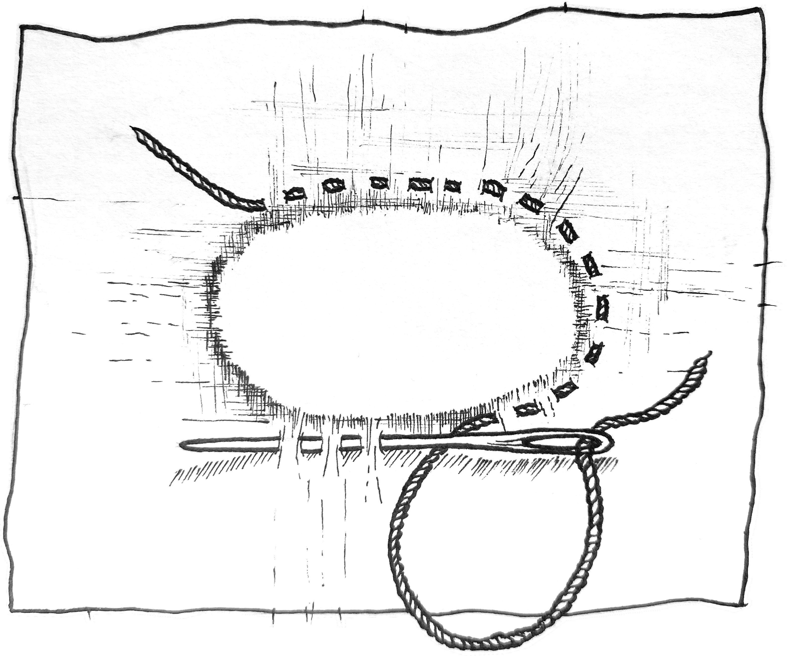

Dust is liminal earth. It is not ashes; it is not nothing; nor is it rich, gravid, damp soil. Dust is dingy, particulate, atomised, everywhere, ephemeral.
Not much can be done with it. No crop can root nor foundation stand in it. And yet there is a plant, tall as any of us, that is seen every space that has not been mechanised or industrialised or domesticated or made aesthetic.
It could feed or clothe any manner of Bog Creature; bowstrings to shoot down an ambling Beast or leaves to stir into a wheaten grassy gruel. For the landless urban Bog Dweller nettles are the answer.
“what does the nettle need? very little soil, no care, no culture... If we would take a little pains, the nettle would be useful; we neglect it, and it becomes harmful. Then we kill it. How much men are like the nettle!.. there are no weeds, and no worthless men,”
- great Sewer Chronicler Victor Hugo
Here is how to make string, right-quick, as easy as wandering a cemetery and plucking some stems in the summer, once the spring is passed and the leaves are no longer tasty. And here is how to use it to mend, to weave; the perfect skills for a wanderer of the wastes, where friends and feasts are few and far and invisible danger lurks. Better to be apprenticed to the nettle than to Machine and Lawn and Market and Town, in these modern bog times.
- Find a nettle patch - cemeteries, railway sidings, abandoned car parks, anywhere for plants up to no good to be found.
- Nettles thrive in sites of human habitation, but love towns of iron and oil and dust and concrete most of all. - Cut or pull a few stalks. Thank the nettles. You may wish to use gloves to avoid the sting, which can also be countered by boiling or drying the stalks.
- Strip the leaves by pushing up and down the stem a few times thus.
- Crush stalks against a rock, or with hammer, or by dancing upon a bundle of them. This breaks the woody pith inside and frees up the fibre (the pith, dried, fares beautifully as tinder).
- Crack the stalk like a bone for its marrow; break the pith and peel off the green fibre from it entire.
- Divide the skin into ribbons, for thick green string, and dry; for finer fibre, scrape the skin instead with a Beasts tooth or jagged flint piece or a knife stolen from a feastingtable. Not too sharp, or the blade will nick the threads.
- Scrape to your liking. The whiter and finer the piece, the weaker and shorter it is; the greener longer nettle threads are flaxstrong whilst the the tiniest white wisps that emerge can be spun like cotton. Collect the threads that emerge
- Twist and ply the threads as shown:
- Cut the rough edges from your hole.
- If it is small enough to weave a patch over (usually less than a knucklebone’s width) secure the edges by running a needle up-and-down in a running stitch around it.
- Then, using the same simple stitch, make vertical lines going over the hole to make a warp as if the fabric were your own loom. Stitch at the beginning and end to secure the thread into the fabric as shown. You may wish to lay the work upon a darning mushroom, jar lid or other flattish rounded thing to help stabilise it.
- Going horizontally, do the same - but put your needle under each second warp thread to weave your patch. At the end, change and go back the other way, switching which threads you cross under and over to make a checkerboard pattern. Secure the end with more stitches. 
- If the hole is larger, lay a patch underneath the hole. secure the edge instead with a blanket’s stitch as shown in the diagram, sewing into the patch underneath as well as the original fabric to secure it.


For added stability, you may go over both patched hole and original fabric with more running stitches (horizontally across, vertically, or both) to quilt everything together in the ‘boro’ style.